Five places where the app used to fail quietly or change things without saying so. Each entry shows what a seller saw before, what they see now, and the screenshot the automated proof run captured against the rebuilt containers on 2026-08-22.
Branch feat/p3-beta-ux-truth · 24 files · api 1016 / web 674 tests · e2e 5/5 · screenshots from apps/web/e2e/p3-ux-truth.spec.ts + live p3-bo-live.spec.ts
0 · Live proof — the 2026-08-05 blocked price-save, on a real listing
NETGEAR GSM4212P · eBay 307139861284 · $599, auto-accept $579 / minimum $549 · real Trading API revises
Before (08-05)
Lowering the price under the auto-accept produced a prose error and a stuck save — no numbers, no way forward from the card.
After (tonight)
Price set to $560 → eBay's thresholds shown in the banner with both actions. Adjust to fit price rewrote them under $560 and the save synced to eBay (1.95 s). Price restored to $599 in-run, thresholds restored to $579/$549 right after — the listing ended exactly as it started.
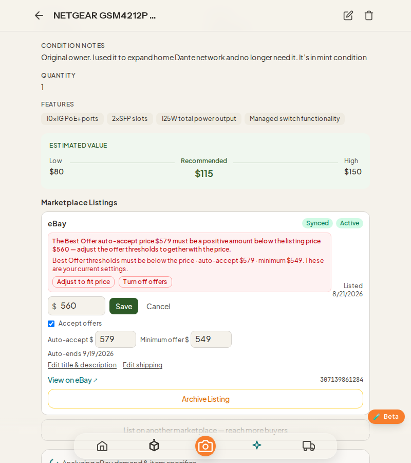
Live conflict on the real listing — the banner with eBay's numbers
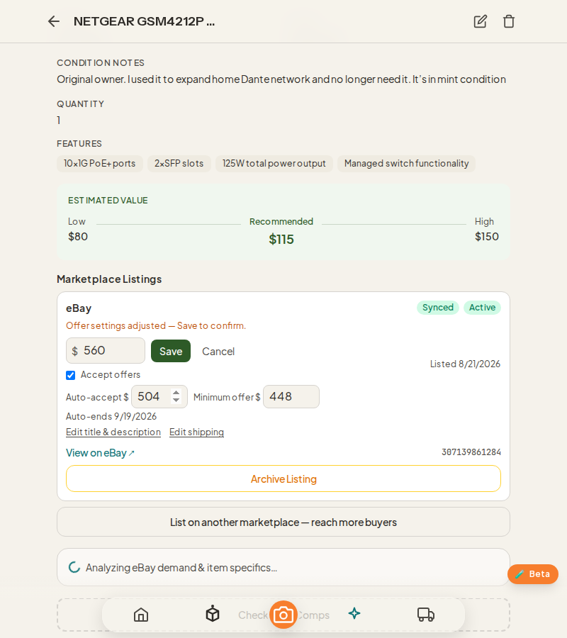
Adjust to fit price → $504 / $448 under $560, Save to confirm
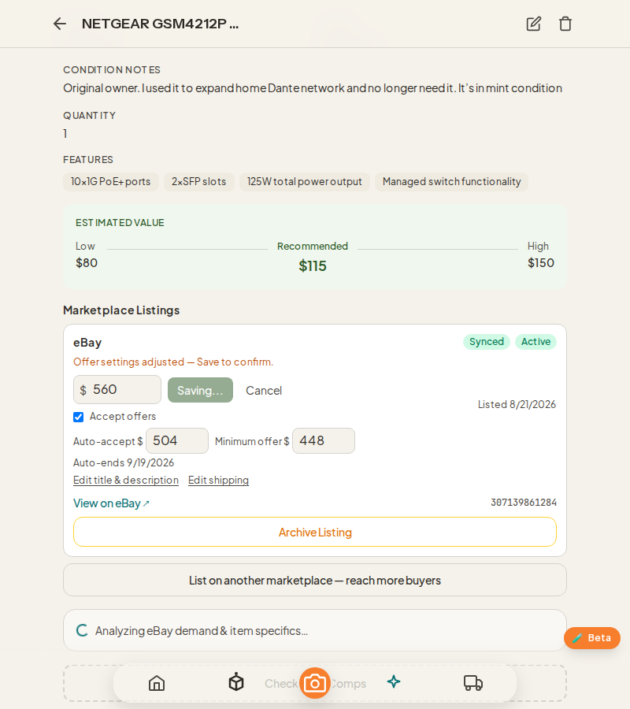
Saved — revise accepted by eBay
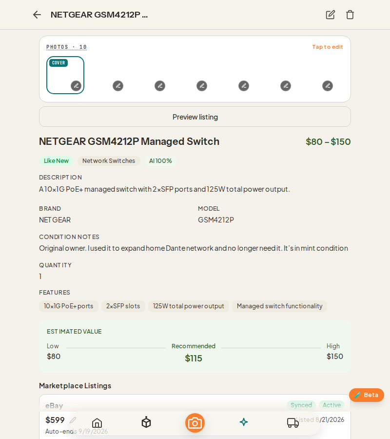
Restored to $599 after reload
The post-save path (eBay holding thresholds Portage never stored) could not be induced live — the only candidate listing had no live thresholds and accepted the lower price; covered by route tests instead.
A price eBay rejected over its Best Offer thresholds came back as a paragraph of prose — and if the rejection happened after the local save, the app reported success with a warning string. No numbers, no action, and on the item edit page the warning was thrown away on navigation.
After
Every conflict now carries the live thresholds. The price editor shows a banner with the exact auto-accept / minimum values, says whether they were refreshed from eBay, and offers two one-tap fixes: Adjust to fit price (rewrites both thresholds below the new price) or Turn off offers. A conflict tripped from shipping, archive or publish opens the same fix. The edit page keeps you on the page with the warning instead of silently leaving.
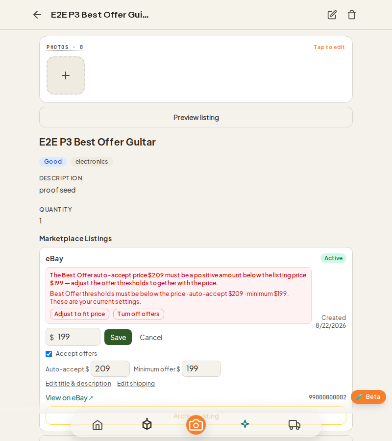
Price save blocked: banner with the real thresholds and both actions
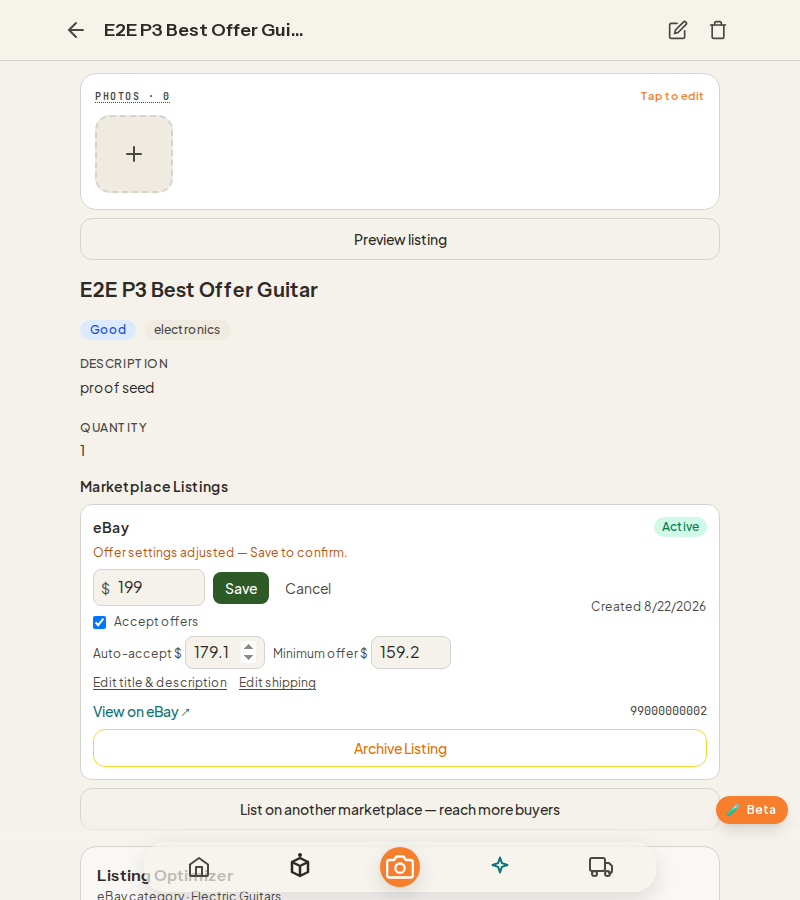
After Adjust to fit price: 179.10 / 159.20 under a $199 price, Save to confirm
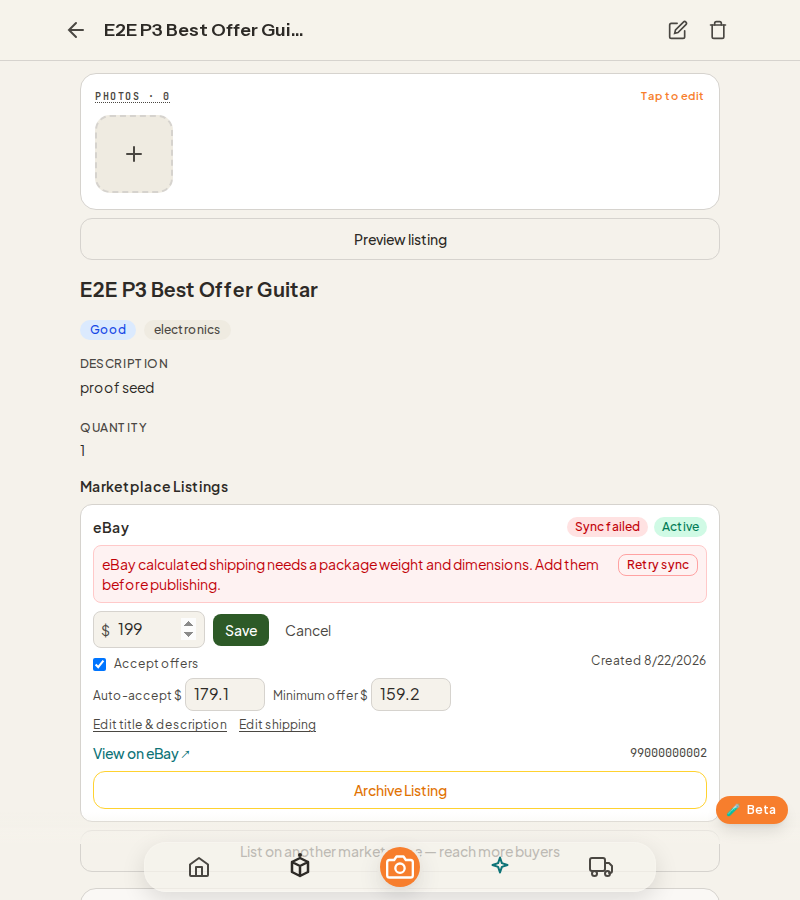
Reloaded: the adjusted thresholds persisted
2 · Scan review tells the truth about outages
Scan → Review screen
Before
Comps search failing looked identical to “no comps found”. The eBay category details (required specifics) failing to load left the header claiming Complete and the List button enabled. A category lookup failure looked like “no category matched”.
After
Three separate notices, each with its own retry: Comps unavailable — using AI estimate only; eBay category details unavailable (header now reads Unavailable, Save & List is blocked with that reason until Retry succeeds); Category lookup failed — Retry lookup, kept apart from the genuine no-match message.
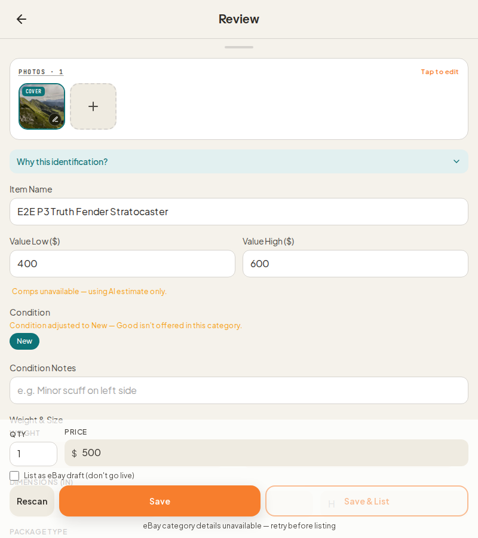
Comps outage notice and condition-snap notice in the pricing/condition area
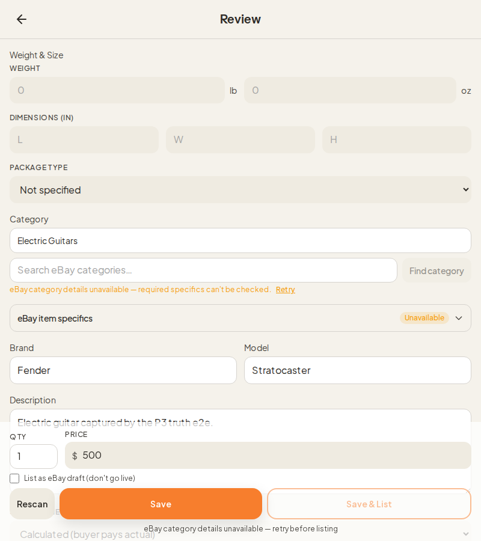
Category details outage: Unavailable chip, Retry, List blocked with the honest reason
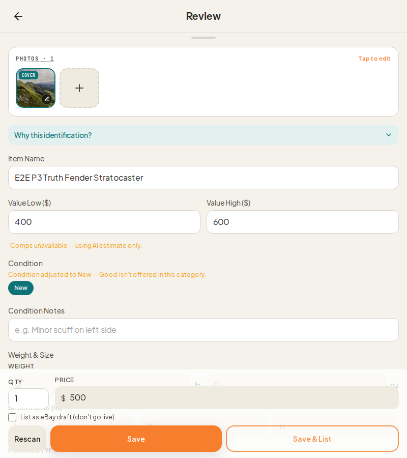
After Retry: notice gone, header back to Complete
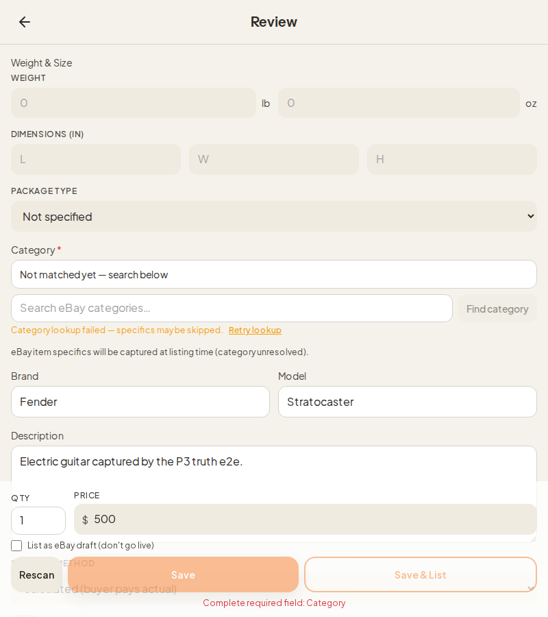
Category lookup failure with its own Retry — distinct from no-matchA real no-match after retry: plain no-match copy, no outage notice
3 · Condition changes are announced
Scan → Review · Condition chips
Before
When the resolved eBay category didn't accept the AI-detected condition, the app quietly switched it (e.g. Good → New). Sellers listed at the wrong condition without knowing.
After
The switch still happens, but a notice says exactly what and why: Condition adjusted to New — Good isn't offered in this category. It clears the moment you pick a chip, use a comp's condition, or the category changes. (Visible in screenshot 1 above.)
4 · Swipe flow gets the same AI prep as Hybrid
Listing flow · Swipe mode, Configure step
Before
On a fresh scan the Swipe flow never created the item before the prepare step, so the AI-prepared eBay fields, comps and Best Offer floor silently never arrived. If item creation failed, both Swipe and Hybrid swallowed the error.
After
Confirming recognition now creates the item first, then runs prepare and comps — the same contract Hybrid uses. A creation failure is shown with a Retry in both flows, and Swipe's Next is held until the item exists. (No screenshot — this is the data path behind the Configure step; proven by component tests.)
5 · Mobile deep links stop fetching a hidden pane
Inventory page with ?item= in the URL
Before
Opening /inventory?item=… on a phone mounted the desktop detail pane invisibly and fired its item fetches for nothing.
After
Below the desktop breakpoint (1024px) the deep link is ignored; the grid renders as usual and no detail fetch is made. On desktop the pane opens exactly as before. Side effect worth knowing: the mobile grid no longer highlights the deep-linked card.
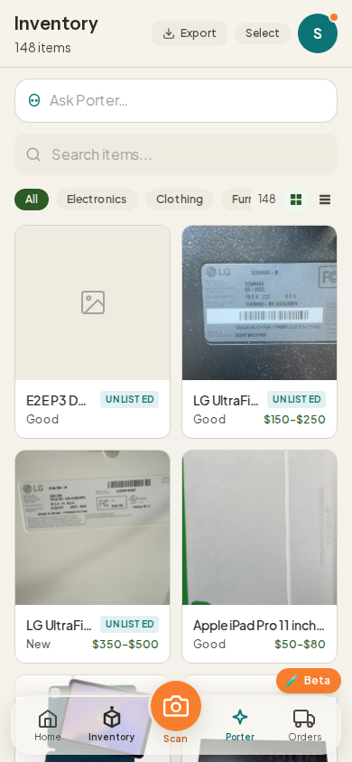
390px viewport with ?item= — grid only, zero detail fetches (asserted in the e2e)